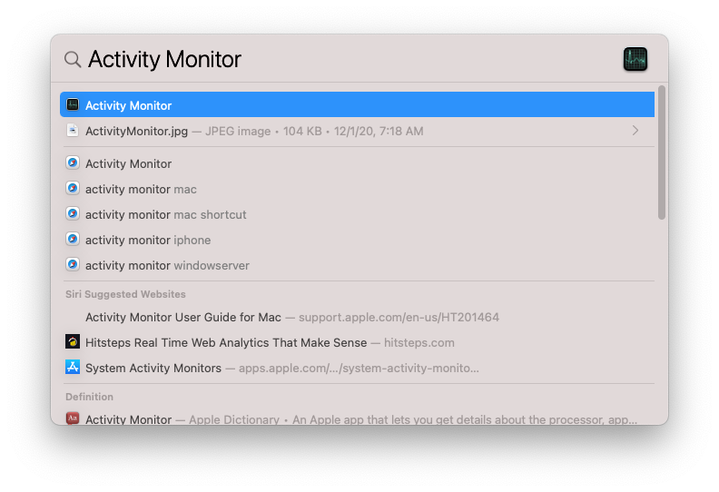
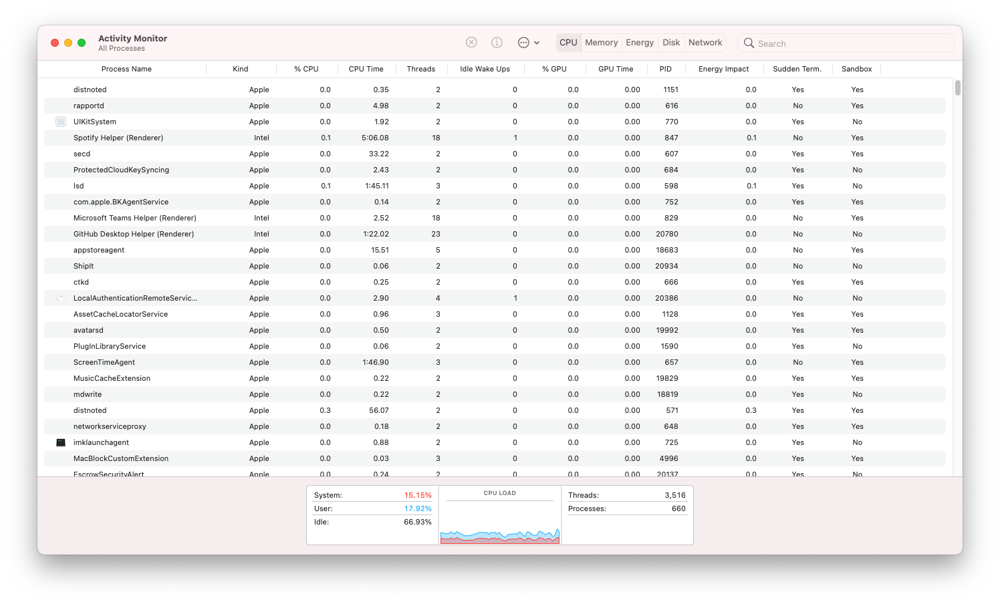
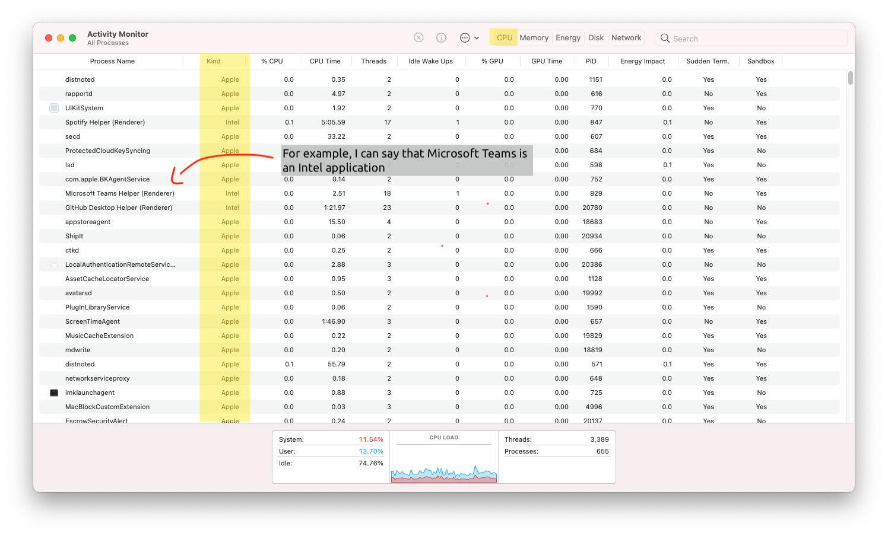
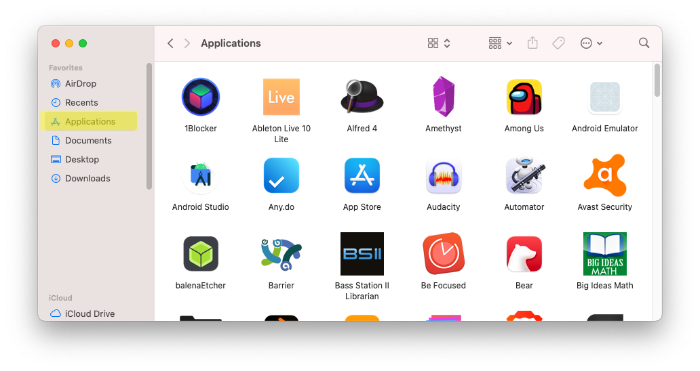
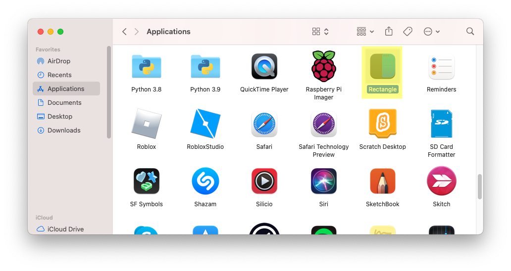
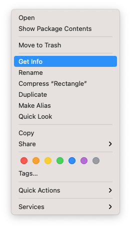
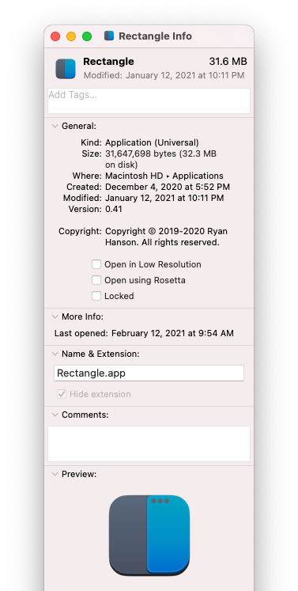
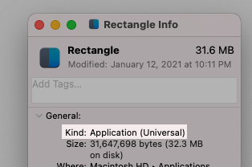
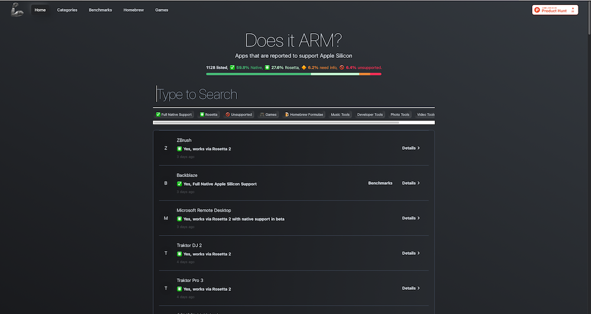

Monday, February 15th, 2021 (Updated June 25th 2021)
Monday, February 15th, 2021 (Updated June 25th 2021)
Imagine this: you just bought yourself a shiny new MacBook. All the reviews say it is the perfect mac to buy right now. You open it up, and you start using it immediately. You might notice that the mac is sluggish when running certain applications, such as Blender (UPDATE: Blender now supports Apple Silicon), yet is blazing fast when running iMovie or Final Cut Pro X. Why is that?
The main reason is that some applications are built for Apple Silicon, while other applications are built for Intel. Apple Silicon applications run well on Apple Silicon computers. Intel applications run well on Intel computers.
You can check which processor you have by clicking the Apple logo on the top left and clicking "About This Mac". If you are running a Apple Silicon mac, it will say "Chip: Apple ____" (right now it is only M1, but Apple will definitely add on to that). Otherwise, you are running an Intel processor.
Again, Apple Silicon applications run fast on Apple Silicon computers, while Intel applications run well on Intel computers. However, there is a middle ground.
Universal applications are built for both Apple Silicon and Intel macs. They run perfectly on both processors. Universal applications might seem "magical", but they are really just the 2 different versions (one for Apple Silicon, one for Intel) glued together. None the less here is how you can tell whether an application is Apple Silicon based or Intel based.
First, open the Applications folder in Finder1. Checking through Activity Monitor
Open Activity Monitor (Spotlight (Cmd + Space) search "Activity Monitor" and then press the Enter key). 
Once opened, it should look something like this: 
On the "Kind" column (be sure to have the CPU tab selected on the top), match it up with the corresponding application! If it says Apple, it is Apple Silicon, and if it is Intel, it is Intel. 
2. Get Info on a Certain Application
First, open the Applications folder in Finder 
Select an Application You Want to Check.
Then, right click the selected app and press "Get Info"
An App Info window will open:
Now, check the "Kind":
It will either say "Apple Silicon", "Universal", or "Intel" in the parentheses (and identity the app accordingly).
3. Check through a info website
Perhaps the easiest (or most complex) way of
checking is by going to a "Does it work on Apple Silicon?" website.
For example, here is isapplesiliconready.com
Here is doesitarm.com

PLEASE READ:
Both websites are great for checking whether an application runs through Rosetta 2 (translation layer for
Intel -> Apple Silicon), natively, or straight up doesn't work.
That's it! 3 simple ways to check whether an application is "Apple Silicon", "Universal", or "Intel" based.
Now, you may ask, what happens when I need to use an app that only supports Intel and is slow? Well, there
is a way around that, but that's another story for another day.
(Hint: you have to build it yourself, something most people either don't want to do or don't know how to)